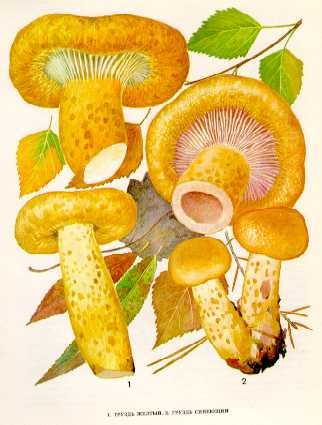

1.ГРУЗДЬ ДУБОВЫЙ. РЫЖИК ДУБОВЫЙ
Обитатель дубрав. Встречается под дубом и лещиной, на гумусовых суглинках в июле -
сентябре.
Шляпка мясистая, до 17 см в диаметре, в молодом возрасте плоско-округлая, потом
воронковидная, иногда неправильная, с волнистым загнутым краем. Поверхность ее голая,
желтооранжевого цвета, с более или менее ясными концентрическими зонами. Мякоть
плотная, белая, желтеющая на разрезе. Млечный сок белый, на воздухе не изменяется, на
вкус очень горький.
Пластинки нисходящие по ножке, сначала белые, потом бледно-охристые, выцветающие.
Споровый порошок желтоватый.
Ножка до 10 см длины, до 2 см толщины, беловатая с желтоватыми углубленными пятнами,
при созревании полая.
Условно съедобен, относится ко второй категории. Пригоден только для соления.
2.ГРУЗДЬ ОСИНОВЫЙ. ГРУЗДЬ ТОПОЛЕВЫЙ
Место его обитания - осиновые и тополевые (осокоревые) леса. Встречается редко, обычно
группами, в июле - сентябре.
Шляпка до 20 см в диаметре, мясистая, сначала выпуклая, потом воронковидная, с
завернутыми вниз бахромчатыми краями, грязновато-белая с ясными розоватыми или
водянистыми концентрическими зонами, в сырую по-году слизистая, липкая. Мякоть
белая, без запаха. Млечный сок белый, не изменяющийся на воздухе.
Пластинки нисходящие по ножке, беловатые или слегка розоватые, очень частые.
Споровый порошок белый с розоватым оттенком.
Ножка плотная, до 5 см длины и до 3 см толщины, к основанию суженная, белая или
одноцветная со шляпкой, вверху мучнистая.
Гриб условно съедобен, второй категории. Пригоден только для соления.